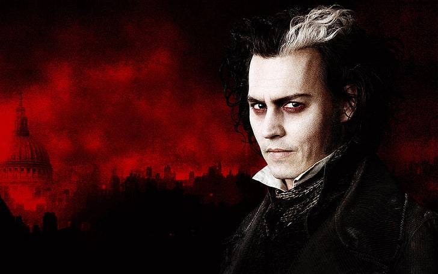

Por qué elegí este tema
El terror no promete finales felices: pregunta qué pasa cuando perdemos el control.
Elegí el terror porque me parece el género más honesto. Habla de lo que todos sentimos y casi nadie dice en voz alta: miedo a la oscuridad, a lo desconocido, a perder a alguien.
También porque es un tema donde la programación luce: la oscuridad, la luz y el movimiento se pueden diseñar con HTML, CSS y JavaScript, como el fondo con niebla y ojos que parpadean.
Ver de qué trataMis razones
- Es un tema que todos entienden.
- Se ve bien con poca luz y mucho contraste.
- Une lo cultural con lo técnico.
- Permite mostrar distintos tipos de miedo con una historia cada uno.
De qué trata el terror
Más allá de los sustos, el terror habla de tres cosas.
El miedo como alarma
El miedo es una reacción del cuerpo para protegernos: el corazón se acelera y los sentidos se afinan. El terror deja sentir esa alarma sin un peligro real.
Lo desconocido
Lo que más asusta no es el monstruo, sino no saber qué es ni qué quiere. Por eso funcionan la oscuridad, el ruido sin origen y lo casi humano.
Miedo compartido
Contar historias de noche une al grupo. Las historias además enseñan: no te acerques al río en la oscuridad, no camines solo por el monte.
Tipos de terror
El terror no es una sola cosa. Cada tipo asusta de una forma distinta, y aquí hay una historia original por cada uno. Son oscuras y algunas son crudas.
Terror del mundo
Cuatro historias de otros países. Son más crudas: aparecen cuchillas, espejos manchados y muertos que no descansan. Son relatos populares, no hechos comprobados.
Kuchisake-onna
Una mujer con mascarilla te detiene en la calle y pregunta si es bonita. Si respondes mal, se quita la mascarilla: tiene la boca cortada de oreja a oreja y unas tijeras en la mano.
Bloody Mary
Si repites su nombre frente a un espejo, con una vela como única luz, aparece un rostro cubierto de sangre. Es un juego de noches de pijamas con siglos de historia.

El Strigoi
Un muerto que no descansa: sale de la tumba para beber la sangre de su propia familia. Los aldeanos abrían el ataúd, le clavaban una estaca y llenaban su boca de ajo.

Sweeney Todd
El barbero de la calle Fleet degollaba a sus clientes con la navaja mientras su vecina vendía pasteles. Nació como relato popular del siglo XIX y nadie logró probar que fuera real.